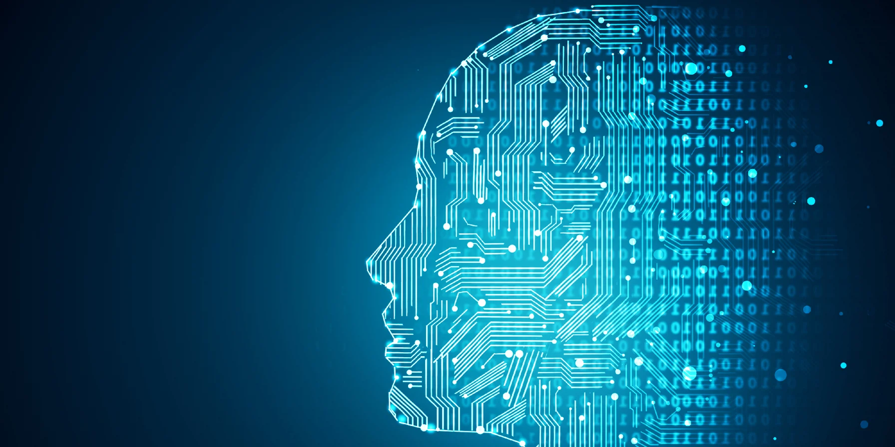

History of A.I. Advancements
The history of artificial intelligence (AI) dates back to ancient times, with mythological accounts of intelligent robots and automated beings. However, the modern era of AI began in the 1950s with the work of researchers like Alan Turing and John McCarthy. In 1956, McCarthy coined the term "artificial intelligence" and organized the Dartmouth Conference, which is often considered the birth of AI as a field.
During the 1950s and 1960s, AI research focused on symbolic or rule-based systems, aiming to replicate human intelligence through logical reasoning and problem-solving. However, progress was slow, and the field faced setbacks during the "AI winter" periods, marked by decreased funding and disillusionment with AI's potential.
In the 1980s and 1990s, AI saw a resurgence with the development of expert systems, neural networks, and machine learning techniques. Expert systems utilized knowledge representation and inference rules to solve specific problems, while neural networks, inspired by the brain's structure, showed promise in pattern recognition and classification tasks.
The 21st century has witnessed exponential growth in AI research and applications, driven by advances in computing power, big data, and algorithms. Machine learning, particularly deep learning, has revolutionized AI by enabling systems to learn from large datasets and make complex decisions autonomously. Applications of AI are now ubiquitous, ranging from virtual assistants and recommendation systems to autonomous vehicles and medical diagnosis.
As AI continues to evolve, researchers grapple with ethical concerns, such as algorithmic bias, job displacement, and the existential risk posed by superintelligent AI. Despite these challenges, the history of AI reflects a remarkable journey of innovation and discovery, with profound implications for society's future.